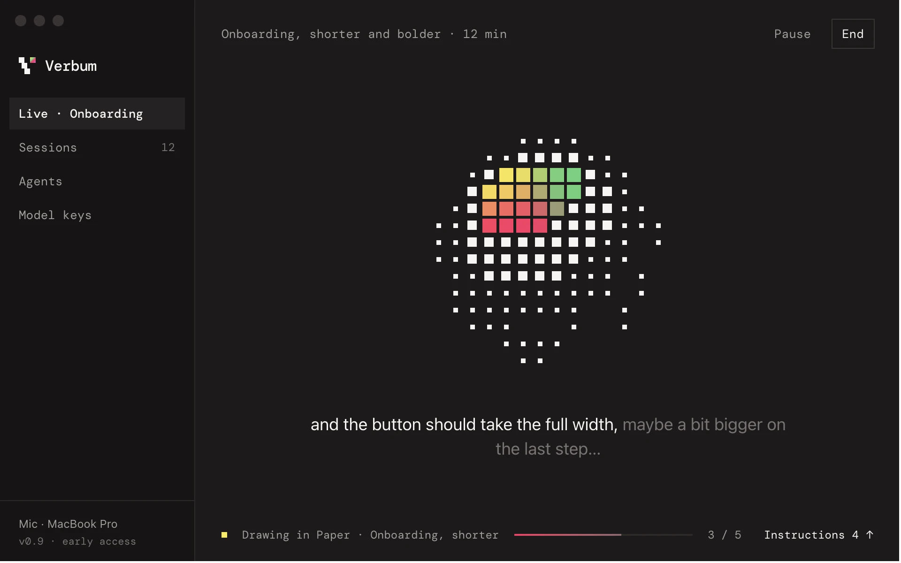
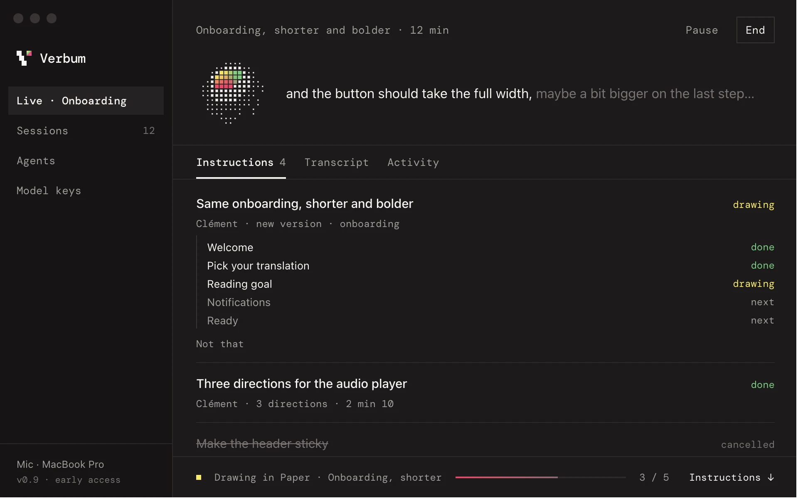
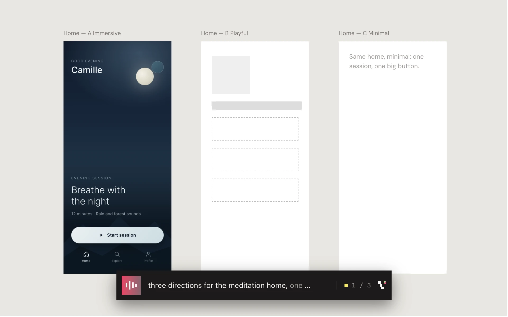

Design without stopping.
Other design tools make you stop: to word a prompt, to answer a question, to wait. Verbum never does. Talk the way you would in a brainstorm, and your screens keep up, right in your design tool.
Works with Paper Figma
Not another
design agent.
You talk.
Screens appear.



The ear.
Not the hand.
A Mac app between your voice and the AI agent you already use. Verbum listens; your agent draws, in your design tool. Alone, in a workshop or in a meeting.
Anthropic DeepSeek Gemini Mistral Ollama OpenAI OpenRouter and many more
- Your voice stays here
- Mac dictation transcribes on your machine. Your voice is never sent or stored.
- Any agent, any model
- Your agent listens and draws with its own login. Or add a fast model with your own key, from any provider, local included.
- Paper and Figma
- Screens land in your own file. Figma needs the Verbum plugin, installed once.
- Starts from what exists
- “Import the onboarding” copies your app's screens, in order. Your colors and components are the starting point.
- Nothing gets overwritten
- Every revision is a copy next to the original, so you can dare. Changed your mind? Say so, or hit “Not that”.
Four steps,
then just talk.
- A Mac with Apple Silicon
- An AI agent: Claude Code, Codex, Cursor, OpenCode…
- Paper or Figma. Figma needs the Verbum plugin, installed once.
Install Verbum
Download, open it and drag Verbum to your Applications folder. It then updates itself.
Connect your agent
In Verbum, pick your agent and click Add. Once.
Open your design file
Open your file in Paper, or in the Figma desktop app with the Verbum plugin running. That's the screen you (and your team) will watch.
Start talking
In Verbum, hit Start listening: it starts Claude Code or OpenCode for you. With another agent, say “start a Verbum session” in its chat. In Claude Code, the shortcut:
/verbummacOS asks for the microphone the first time. When you're done, End writes a report of every decision.